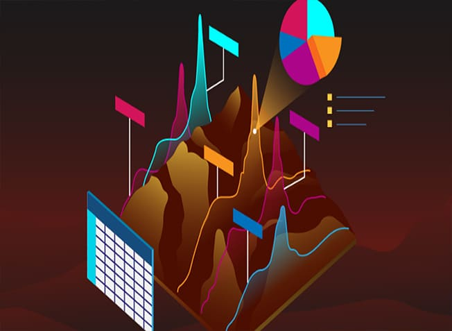

QUARTER I : 2020 |
TECHNICAL ARTICLEGeographic Information System (GIS)

Geographic Information System is nothing but a computer application which captures, stores and displays the various physical and manmade features on the Earth. Starting from mountains to buildings, GIS can map everything and storing it in a Database. White House defines GIS as “the technology, policies, standards, human resources, and related activities necessary to acquire, process, distribute, use, maintain, and preserve spatial data.” GIS is an integrated system, which utilises more than one feature at a time. How does it work?
GIS being a Database System can store an enormous amount of data. This includes longitude, latitude, zip code, address for a given location. In addition to those, it can also have the name of the place, population, landscape, types of buildings localities etc. GIS data can be stored either as Cartographic data like maps or as Spreadsheets like MS Excel or even Photographic data. It is the job of Database engineers to fill the GIS with appropriate data. History of GIS
GIS was born when Dr Roger Tomlinson, who is also known as the father of GIS, and a Geographer himself, wanted to make Urban and Rural Planning easier. Spatial analysis is considered to be the major principle behind GIS technology. Later on Wars, Epidemic prompted technology to be used for various aspects like Nuclear Weapon Research. The first model of GIS was called Canada GIS designed by Dr Roger Tomnilson in 1960. Canada used it for mapping and utilising the resources of Rural Canada ie Soil, agriculture, forests etc at a scale of 1:50,000. With the rise of WWW, GIS became more prominent in many developed countries and now in developing countries. Difference between GPS and GIS
We often tend to mix up both these terms or may take it as the same. That’s not true. GPS stands for Global Positioning System, which gives the live position of an object on Earth. On the other hand, GIS Software can use the data from GPS and presents you with useful information which you can comprehend and understand. GPS is fully controlled by the Dept of Defence of the United States. It uses the Global Navigation Satellite System (GNSS) for locating your position, especially when you are in a car. Applications
|